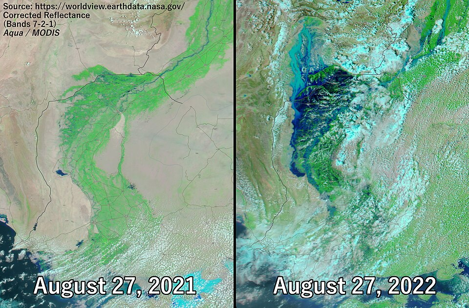

Floods are the most frequent natural hazard on Earth and, measured by the number of people affected, the most consequential. In the UN Office for Disaster Risk Reduction's review of the period 2000–2019, floods accounted for roughly 44% of all recorded disaster events and affected about 1.65 billion people. A flood is, at its simplest, the temporary inundation of land that is normally dry, but behind that definition sit several distinct physical systems: the atmosphere that delivers water, the soils and landscapes that partition it between storage and runoff, the channels and floodplains that convey it, the coastal ocean that can push water landwards, and the human infrastructure that is meant to control all of these and occasionally becomes the hazard itself.
This course treats floods at the level expected of a graduate student in hydrology, civil engineering or disaster risk management. It starts from the catchment water balance and the processes by which rainfall becomes runoff, develops the hydrograph and the hydraulic equations that describe flow in rivers, and then turns to the statistical methods used to estimate how often a flood of a given size should be expected. Later lessons cover forecasting and warning, structural defences such as levees and dams, the economics of flood risk and insurance, and the way a warming climate is changing both rainfall extremes and sea level. Eight case studies, from the Yellow River in the nineteenth century to Derna in 2023, show how these ideas play out when systems fail.
Throughout, numbers are given with their uncertainties. Historical death tolls for the great Chinese floods, for example, differ by an order of magnitude between sources, and peak discharges of extreme floods are usually reconstructed after the event because the gauges were destroyed. Recognising where knowledge is firm and where it is soft is itself an essential professional skill in flood science.
In this course, you will:
- 1.Write and apply the catchment water balance and the main infiltration and runoff-generation models
- 2.Construct flood hydrographs with the unit hydrograph and estimate design peaks with the rational method
- 3.Distinguish the physical mechanisms of riverine, flash, pluvial, coastal, snowmelt, ice-jam, glacial and dam-break floods
- 4.Use continuity, Manning's equation and the Froude number to describe open-channel flow and flood routing
- 5.Carry out a basic flood frequency analysis and explain return periods, exceedance probabilities and non-stationarity
- 6.Evaluate forecasting and warning systems, structural defences and the "levee effect"
- 7.Quantify flood risk as expected annual damage and discuss insurance and floodplain policy
- 8.Summarise the evidence for how climate change is altering flood hazard
Figures


Contents
The Hydrological Cycle and the Catchment Water Balance Lesson 2
Infiltration and Runoff Generation Lesson 3
Hydrographs, the Unit Hydrograph and the Rational Method Lesson 4
Types of Floods and Their Generating Mechanisms Lesson 5
Open-Channel Hydraulics and Flood Routing Lesson 6
Flood Frequency Analysis Lesson 7
Forecasting and Warning Lesson 8
Levees, Dams and the Levee Effect Lesson 9
Flood Risk, Insurance and Floodplain Management Lesson 10
Floods in a Changing Climate Case Studies
8 major events analysed References
24 sources for further reading
Image sources
- Figure 1 · Saint Louis satellite photo of Great Flood. By NASA. Public domain. From Wikimedia Commons: https://commons.wikimedia.org/wiki/File:Saint_Louis_satellite_photo_of_Great_Flood.jpg
- Figure 2 · 2022 Pakistan Floods - August 27, 2021 vs. August 27, 2022 in Sindh. By NASA Worldview (Aqua/MODIS imagery). Public domain. From Wikimedia Commons: https://commons.wikimedia.org/wiki/File:2022_Pakistan_Floods_-_August_27,_2021_vs._August_27,_2022_in_Sindh.jpg